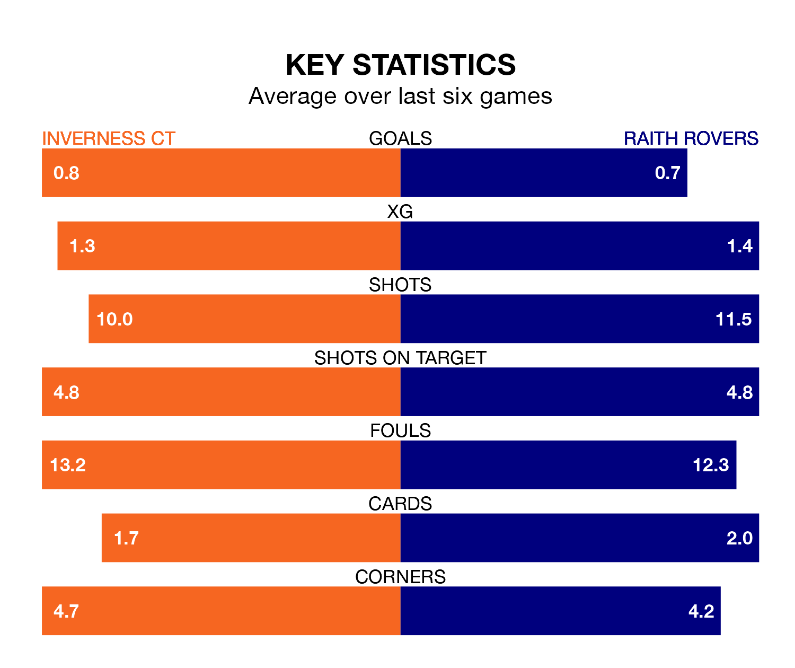

Inverness CT host Raith Rovers in Friday's late match at the Tulloch Caledonian Stadium looking to bounce back from defeat last time out in the Championship.
ICT, who sit eighth in the league after 33 games, fell to a 0-1 away defeat to Queen's Park on April 13.
They face a Raith side who secured a draw in their last match, a 0-0 tie with Partick Thistle, and who sit second in the table.
With 37 goals in 33 games so far this season, Inverness CT are the league's second-lowest scorers with 1.1 goals per game. But they are conceding fewer than average too, letting in 37 goals at a rate of 1.1 per game.
Raith, meanwhile, are above average scorers, with 1.6 goals per game, compared to a league average of 1.4. They have conceded 1.3 goals per game.
With Maciej Dabrowski between the sticks, Rovers can rely on one of the league's safest pair of hands. He has kept nine clean sheets in his 31 appearances this season, and only one other 'keeper – Dundee United's Jack Walton – has been able to prevent the opposition scoring on more occasions in the Championship.
In ICT's net, Mark Ridgers has seven clean sheets in 33 games.
In the last 10 years, Inverness CT and Raith have played each other on 18 occasions. Inverness CT won nine of them, Raith two, and they drew seven times.
On average, ICT scored 1.6 goals and Raith 0.9 in those matches.
Their last meeting was on January 27, when Inverness CT won 3-2 away.
The hosts are in mixed form in the Championship, with two wins and two draws from their last six games.
And also with two wins and two draws over that period, the away team's form is identical – they have both taken eight points from 18.
Friday's match will be refereed by Euan Anderson, who has taken charge of nine Championship games so far this season, issuing no red cards and booking 29 players. He has awarded one penalty.
The last Inverness CT game Anderson refereed was a 1-0 home loss to Queen's Park on February 3. His last Raith match was their 1-0 win away at Partick Thistle on March 12.
Updated: 15:40 (UTC), 18/04/24